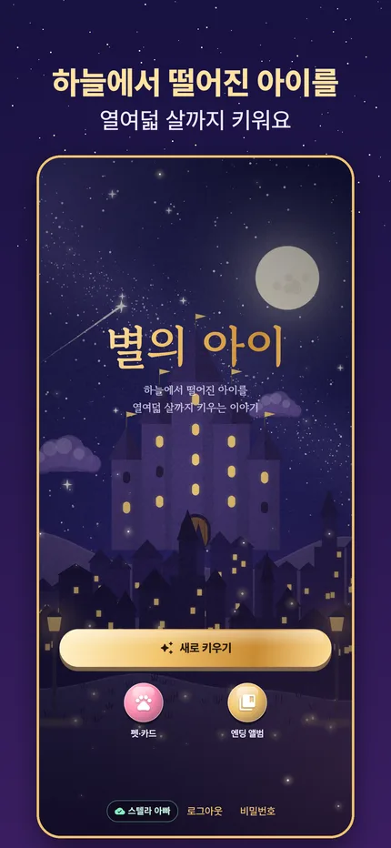
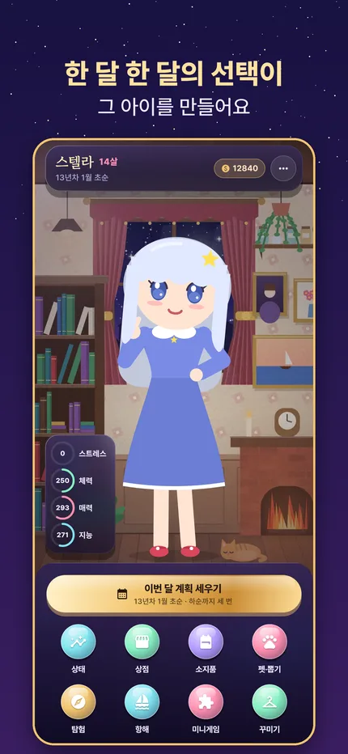
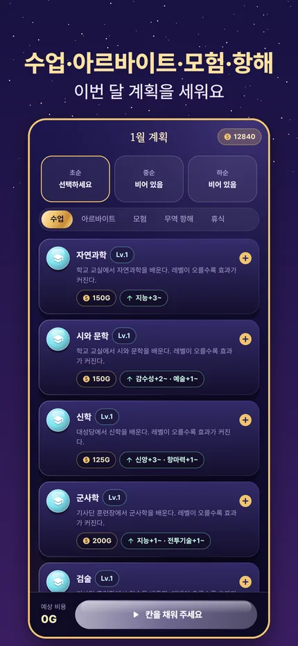
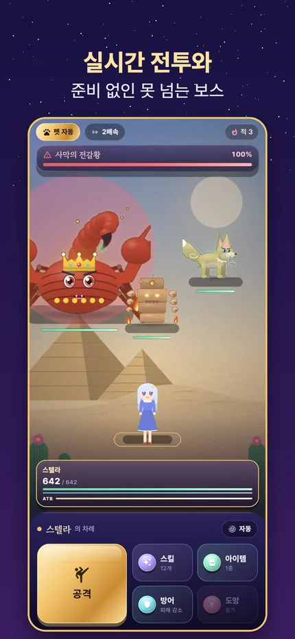
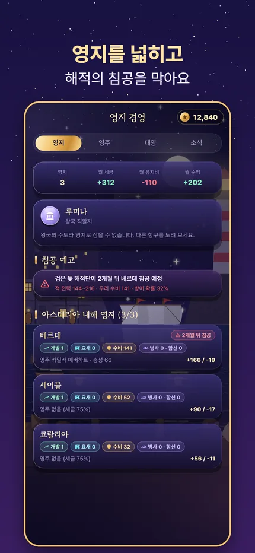
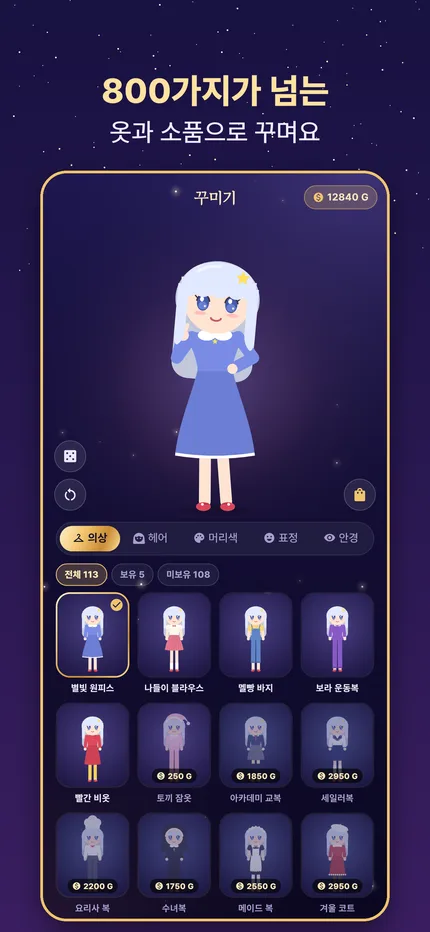
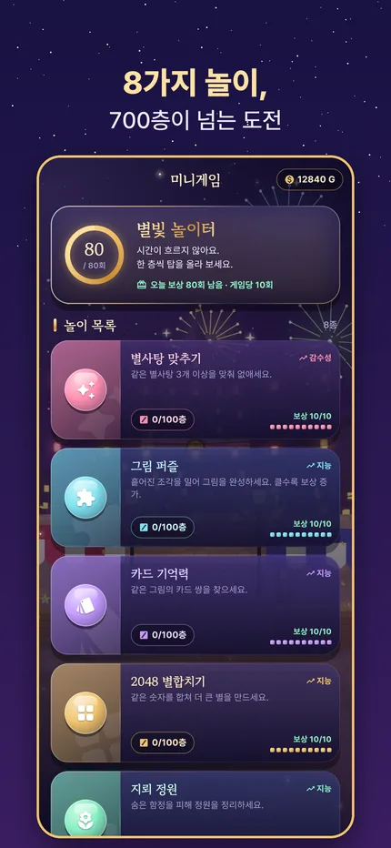
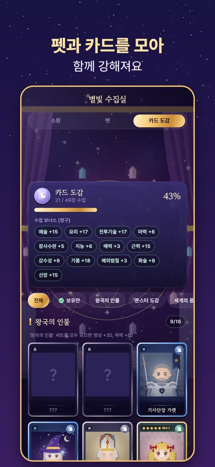
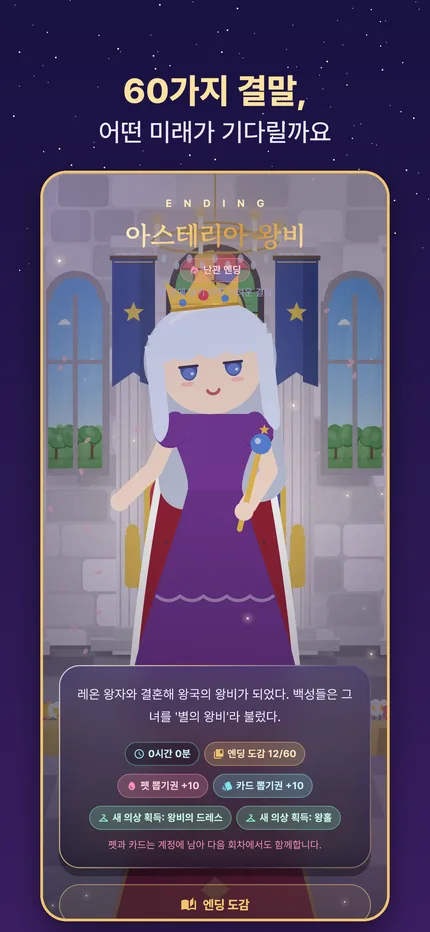

별의 아이
별이 쏟아지던 밤, 하늘에서 떨어진 아이를 열여덟 살까지 키우는 이야기.









한 달 한 달, 그 아이의 하루
초순·중순·하순마다 수업, 아르바이트, 휴식, 모험을 정해 주세요. 스트레스와 골드를 살피며 스물다섯 가지 능력치를 키웁니다.
모험과 전투
13개 지역을 탐험하며 실시간 전투로 몬스터와 맞섭니다. 준비 없이는 넘을 수 없는 보스가 길목마다 기다려요.
대항해와 영지
다섯 대양을 오가며 무역하고, 항구를 영지로 삼아 영주를 앉히세요. 해적의 침공을 막지 못하면 영지를 잃습니다.
60가지 결말, 이어지는 가문
어떻게 키우느냐에 따라 결말이 달라집니다. 가보와 가문의 영지는 다음 아이에게 이어지고, 어떤 결말은 몇 대에 걸쳐야 닿을 수 있어요.
꾸미기와 수집
800가지가 넘는 옷과 소품, 40종의 펫과 49장의 카드. 펫과 카드는 계정에 남아 다음 회차에도 함께합니다.
별빛 놀이터
퍼즐과 리듬 놀이 8종, 700층이 넘는 도전. 별을 모아 최고의 장비를 만드는 재료를 얻으세요.